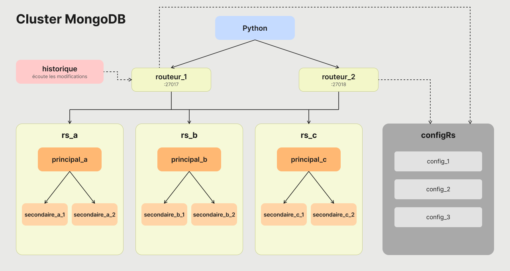

Le client passe par un des deux routeurs. Le routeur regarde dans les serveurs de configuration quel groupe contient la donnée, puis envoie la requête au serveur principal de ce groupe. Le principal copie chaque modification sur ses deux secondaires.
mongos) : routeur_1 sur localhost:27017, routeur_2 sur localhost:27018.config_1, config_2, config_3 (groupe configRs). Ils savent où se trouve chaque donnée.rs_a : principal_a, secondaire_a_1, secondaire_a_2rs_b : principal_b, secondaire_b_1, secondaire_b_2rs_c : principal_c, secondaire_c_1, secondaire_c_2historique : note toutes les modifications des données dans un fichier.init_cluster : prépare le cluster au démarrage puis s'arrête.Il faut Docker (avec docker compose) et Python 3 pour exécuter lancer.py. PyMongo n'a pas besoin d'être installé sur l'hôte : il est installé dans l'image Python utilisée par les conteneurs. Depuis le dossier du projet :
python3 lancer.py # démarre tout
python3 lancer.py stop # arrête tout (les données sont gardées)lancer.py démarre les conteneurs puis attend que le service historique soit prêt à écouter les changements. Il affiche ensuite Cluster prêt. et l'adresse des routeurs.
Sur une machine lente, la préparation peut durer plus longtemps. Pour vérifier qu'elle est bien terminée, cette commande doit finir par Cluster prêt. :
docker logs init_clusterinit_cluster fait les étapes dans cet ordre, car chacune a besoin de la précédente :
configRs, rs_a, rs_b, rs_c) et attend que chaque principal soit élu ;books.books, avec la clé _id hashée pour répartir les livres ;scripts/books.txt si la collection est vide.Ensuite historique démarre. On peut relancer le projet autant de fois qu'on veut : ce qui est déjà fait n'est pas refait.
Les tests tournent dans le service Compose tests, activé à la demande par le profil test et branché sur le même réseau que le cluster. Rien à installer sur la machine. Le cluster doit être démarré :
docker compose --profile test run --rm testsLe script exécute 8 tests :
test_routeurs : vérifie séparément que les deux routeurs répondent ;test_etat_shards : interroge directement les membres et vérifie l'état réel des trois shards ;test_etat_config_servers : vérifie l'état réel des trois serveurs de configuration ;test_historique : vérifie qu'une insertion apparaît dans le journal d'historique ;test_ecriture_majoritaire : vérifie une écriture avec confirmation majoritaire, sa lecture et sa suppression ;test_config_shards : vérifie que les trois shards sont déclarés avec trois membres chacun ;test_config_collection_shardee : vérifie le sharding hashé de books.books et la présence de données sur les trois shards ;test_donnees_books : vérifie que les livres sont accessibles via les routeurs.Si tout va bien, il affiche Tous les tests sont passés (8/8). Si un conteneur est éteint, le test concerné échoue et donne son nom, par exemple rs_a dégradé : {'principal_a': 'INJOIGNABLE', ...}.
lancer.py : lance ou arrête le projetdocker-compose.yml : tous les serveurs, leurs volumes, le réseau et le service tests (profil test)python/init_cluster.py : prépare le cluster et importe les livrespython/historique.py : enregistre les modificationspython/Dockerfile : image Python utilisée par init_cluster, historique et testsscripts/books.txt : les donnéestests/test_cluster.py : les testsassets/b.a.-ba.txt : explication des mots-clés Dockerassets/historique.txt : difficultés, solutions et sourcestest_routeurs échoue : redémarrer le routeur nommé dans l'erreur (routeur_1 ou routeur_2).test_etat_shards échoue : redémarrer le membre indiqué comme INJOIGNABLE parmi principal_a, secondaire_a_1, secondaire_a_2, principal_b, secondaire_b_1, secondaire_b_2, principal_c, secondaire_c_1 et secondaire_c_2.test_etat_config_servers échoue : redémarrer le serveur de configuration indiqué (config_1, config_2 ou config_3).test_historique échoue : vérifier puis redémarrer historique.Pour redémarrer un conteneur, utiliser docker compose restart NOM_DU_SERVICE, par exemple docker compose restart routeur_1.